About LaCalS
For what
- LAMA
히브리어로 'why?'라는 의미이며 질문은 아이들의 풍부한 상상력과 창의력의 시작입니다.
- GLOCAL
‘Local’과 ‘Global’의 합성어로, 로컬에서 글로벌로 뻗어나가는 시각과, 글로벌 관점을 로컬에 적용하는 역량을 함께 키웁니다.
- STAGE
모든 아이가 자신의 색깔을 찾아 각자의 무대에서 그 색깔을 마음껏 선보이길 바라는 마음을 담았습니다.
Stage-Based Multilingual Creative Learning Center
LaCalS는 아이가 무대 위에서 언어와 감정을 표현하며 성장하는 무대기반 창의융합교육센터입니다.기초 무대에서 시작해서, 세계와 연결되고, 탐구하며, 자신감을 키우는 성장 여정을 제공합니다.
LaCalS의 교육철학
All kids have their own stage to PLAY!
- 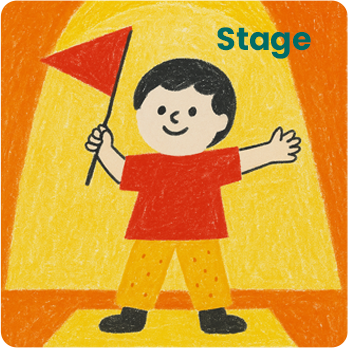
무대 기반 표현력
- 정규클래스: 자기 생각 표현하기, 자기주도 창작물
- 테마클래스: 실 공연, 직접만든 대사, 무대 영상, 과정 사진
- 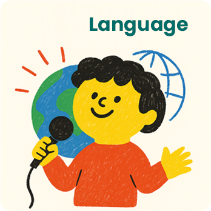
언어 감각, 사고 유연성
내생각을 언어로 풀어내고 다양한 언어로 사고 전환
- - 다중언어 집중환경 Translanguaging
- - 스캐폴딩 접근, 수업 피드백 노트 작성 시 아이의 생각과 성장 기록
- 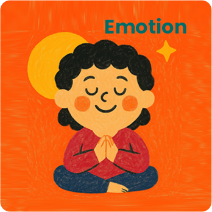
정서 지능, 자기 조절력
감정을 인식하고 공감하며, 언어로 감정을 표현
- - 기질/자기조절력 검사(TCI/SRRS)
→ 아이 특성 맞춤 프라이빗 설계 - - SEL 프로그램
- - 정기 분석 리포트
- - 기질/자기조절력 검사(TCI/SRRS)
"LaCalS는 아이가 자신의 색깔로 자신만의 무대를 만들어가는 과정을 응원합니다."
By whom
라칼스는 ‘무대(Stage)’를 통해 아이의 감정, 언어, 사고가 자라난다고 믿습니다.
LaCalS Crew는 각자의 전문성과 글로벌 무대 경험을 바탕으로, 아이들이 자신만의 언어로 세상과 소통할 수 있도록 함께합니다.
LaCalS Crew
- 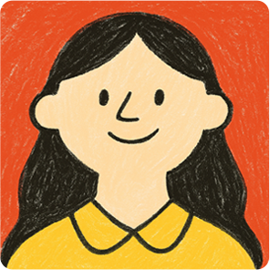
- JAMIE 대표
- 라칼스 교육·운영 총괄 /
IB 커리큘럼 및 열린 질문 특화 - “아이의 호기심을 탐구로, 탐구를 성장으로 이끌어갑니다.”
- 글로벌 인재를 키우는 대표 Jamie입니다
- #글로벌 인재 #다중언어
#창의융합교육설계 #자기표현
- 학력 및 연구활동
- Cotter Schools(MN, USA) 졸업
- The University of Iowa(IA, USA) 학사 졸업Pre-medicine Track, Global Health 세부전공
- 서울대학교 보건대학원 석사 졸업국내·외 아동 대상 논문, 국내·외 연구 발표 및 수상 다수
*질적연구 특화
- 커리어 이력
- 미국 아동기관 보건전문가 근무
- 외교부 주니어/인턴 파견 근무
- 볼리비아 PAHO/WHO- 국제아동기구 아동보건 프로젝트
- 국제보건 공공기관 근무- 국제보건의료 전문 교육사업
- 사업발굴, 기획, 운영관리, 평가 등
- 기타사항
- 보유 자격TESOL, 하브루타지도사1급, 영어 스토리텔링지도사
- 한국어, 영어, 스페인어 구사
- 32개국 글로벌 리더 및 기관과 협력 경험 多
- ·질적 연구(qualitative research)기반으로 영유아기 사고 확장 교육 모델 및 커리큘럼 개발
- · IB(International Baccalaureate) 교육체계 및 Inquiry-based Learning 설계
- · 라칼스 Stage 시스템 총괄
- · 다문화·다언어 학습 환경에 특화된 글로벌 리더십 보유
- 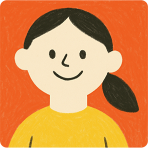
- STELLA 공동대표
- 라칼스 콘텐츠·감정교육 총괄 /
SEL·아동발달 전문가 - “감정이 자연스레 표현될 때, 사고와 언어는 유연하게 자랍니다.”
- 아동발달전문가 Stella입니다.
- #정서지능 #자기조절력
#인지발달 #비인지능력
- 학력 및 연구활동
- 가톨릭대학교 간호대학 학사 졸업
- 서울대학교 보건대학원 석사 졸업
- 아동, 여성 관련 연구 다수
- 커리어 이력
-
- 아동병원 간호사
- 정신건강의학과 간호사
- 연구원 출신 엄마
- 신생아돌봄, 하브루타 인기 강사
- 기타사항
-
- 아동발달지도사
- 하브루타지도사 1급
- 영유아 몬테소리 교육과정 수료
- · SEL(사회정서학습) 및 자기조절(Self-Regulation)분야 컨설턴트
- · 감정·언어·사고 발달을 통합하는 영유아기 놀이 기반 교육 콘텐츠 설계·개발
- · 아동 발달과 정서지능 연구를 바탕으로 한 라칼스 자체 워크북·컨설팅 리포트 총괄
- 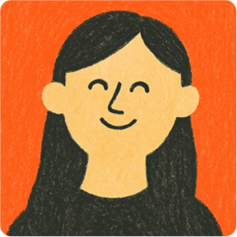
- JULIE 원장
- Harpatka & World Story Atlas
담당 / 창의·탐구 중심 교육 - “모든 아이는 자신만의 스토리를 이미 품고 있습니다. 저는 그 이야기가 무대 위에서 피어나도록 돕습니다.”
- 아이의 눈높이에서 소통하는 선생님 Julie입니다.
- #탐구학습 #글쓰기
#세계문학 #내적중심성
- 학력 및 연구활동
- University of Sydney 학사 졸업Accounting 전공
- 커리어 이력
-
- 호주 회계사무소 근무
- 컨설팅 다국적기업 근무
- 영유아 영어 클래스 운영창의놀이, 스토리텔링, 파닉스
- 초중등 대형브랜드 어학원 전담 강사100% 영어 4대 영역(읽기/듣기/말하기/쓰기) 수업
영어 문학/비문학 수업 - 국제학교 및 리터니 대상 영어 강사주제별 문학/비문학 분석, 글쓰기 수업
- 기타사항
-
- 하브루타지도사 1급
- 영어스토리텔링지도사
- 영어동화구연지도사 1급
- · 유아·초등 통합교육 및 창의·탐구 중심 교수법 전문가
- · 다양한 교육 환경에서의 경험을 바탕으로 아이의 개별 성향을 세심하게 반영
- · 탐구와 상상력을 결합한 프로젝트 중심의 몰입형 수업 설계
- · 아동이 스스로 질문하고 사고를 확장하도록 돕는 하브루타식 접근
- 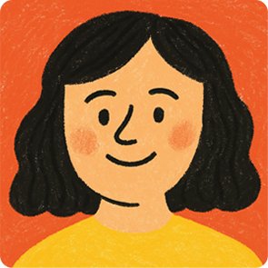
- DURY
- Bitahon – SEL·Chavruta
Theatre 담당 / 연극 연출가 - “무대 위에서 아이가 스스로를 연출하는 순간 빛이 납니다.”
- 영국에서 온 연극 연출가 Dury입니다.
- #독창성 #스토리텔링
#고전문학 #예술교육
- 학력 및 연구활동
- Cambridge School of Visual and performing Arts, Cambrige, UK Foundation Degree
- Goldsmiths, University of London Fondation Degree & Undergraduate Degree in Art
- 커리어 이력
- '또 다른' 대표/연출
- '학전' 어린이무대 기획 창조학당
- '키즈 런던 캠프' 기획 및 운영
- 영어영극 대표강사
- 프리랜서 통•번역가
- 유명 공연기획사 & 극단 (조)연출
- · SEL(사회정서학습)과 하브루타 방식을 융합한 영어극 진행
- · 국내외 무대 경험을 바탕으로 아이가 타인의 감정과 시선을 이해하고, 서로의 이야기를 함께 만들어가는 과정 중심 클래스 운영

- MARIA
- Lama & Bitahon 담당
/ 아동·청소년 연극 전문가 - “무대는 아이가 자신의 감정을 탐색하고 표현하는 공간입니다.”
- 소통이 중요한 표현창작가 Maria입니다.
- #아동연극 #표현력확장
#다중언어 #상호작용
- 학력 및 연구활동
- 한양대학교 연극영화학과 학사 졸업
- 한국예술종합학교 아동청소년연극 석사 수료(26년 2월 졸업예정)
- 아동연극 연구 및 연출 다수
- 커리어 이력
- 국내외 연극 공연 23편 연출, 기획, 연기-‘한국예술종합학교’ 연극 기획/연출, 연기
-‘서울셰익스피어컴퍼니’ 리어왕 등 연기 - 국내외 독립/단편영화 5편 출연
- 영/유아 대상 언어교육 강사
- 영어/스페인어/한국어 통번역
- 국내외 연극 공연 23편 연출, 기획, 연기-‘한국예술종합학교’ 연극 기획/연출, 연기
- 기타사항
- 영어, 스페인어, 한국어 구사
- 연극 및 학업 관련 수상 다수
- · 아동·청소년 연극 전공자로서 놀이·이야기·창의적 움직임을 결합한 몰입형 클래스 진행
- · 다중언어 환경 속에서 Translanguaging 접근 활용
- · 국제학교 강의 경험을 바탕으로, 영유아 대상, 표현의 다양성과 감정의 차이를 존중하는 교육 실천
- 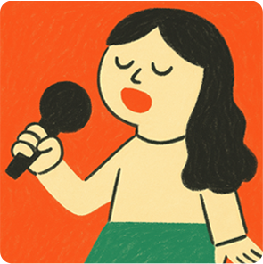
- JENNY
- Bitahon – Drama & Speech
담당 / 연기·발성 특화 - “아이의 목소리가 무대를 만나는 순간, 자신감은 자연스럽게 자랍니다.”
- 아이들을 사랑하는 연극배우 Jenny입니다.
- #참여연극 #스피치
#발음교정 #열린융합사고
- 학력 및 연구활동
- 상명대학교 러시아어문학과/경영공학과 학사 전공
- 동국대학교 공연예술학과 연기전공 석사 수료(26년 졸업 예정)
- 커리어 이력
- 연극 공연 4편
- 연기 단편 영화 8편 출연
- 읽기훈련, 발음교정 지도 강사
- 기타사항
- 한국어, 영어, 러시아어 구사
- 캐나다 거주 경험
- · 여러 언어와 감정의 리듬을 이해하며, 연기와 발성을 바탕으로 한 퍼포먼스 교육 진행
- · 스토리텔링과 드라마 활동을 통해 아이의 표현력과 발화 자신감 향상 지도
LaCalS는 학습을 위한 학원이 아닙니다.
아이들의 ‘웰빙(Well-Being) 성장’을 연구하고 실현합니다.
아이가 언어로 사고하고, 감정으로 표현하며, 무대 위에서 세상과 연결되는 공간입니다.
LaCalS – Stage-Based Multilingual Creative Learning Center
Where every child learns to express their emotions and ideas on their own stage.
아이들의 ‘웰빙(Well-Being) 성장’을 연구하고 실현합니다.
아이가 언어로 사고하고, 감정으로 표현하며, 무대 위에서 세상과 연결되는 공간입니다.
LaCalS – Stage-Based Multilingual Creative Learning Center
Where every child learns to express their emotions and ideas on their own stage.
BI/CI
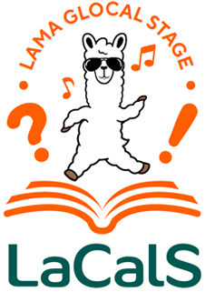
Color Palette
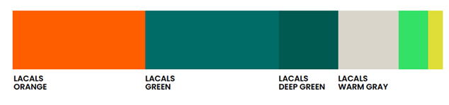#FF5E00 Lama Orange: 감정과 에너지(아이의 표현 중심, 포인트 컬러)
#006C67 Stage Teal：탐구와 사고(로고상표·브랜드 메인)
#595757 Neutral Charcoal: 내적 통합(배경·브랜드 프레임)
At where
서울특별시 강남구 선정릉132길 17(청담동 38-18), 4층
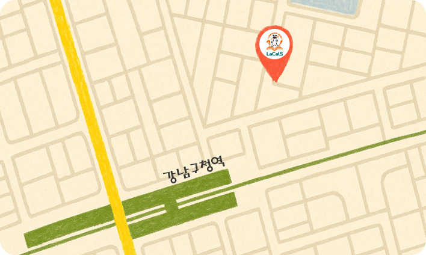- 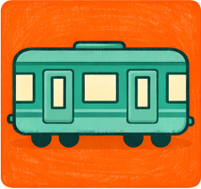지하철 이용 시
7호선, 수인분당선 강남구청역 4번 출구 도보 2분
- 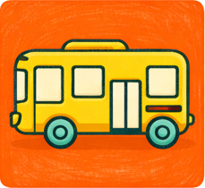버스 이용 시
청담동래미안아파트역 하차 후 도보 3분
- 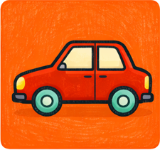자가용 이용 시
강남구 선릉로 132길 17(청담동 38-18), 4층